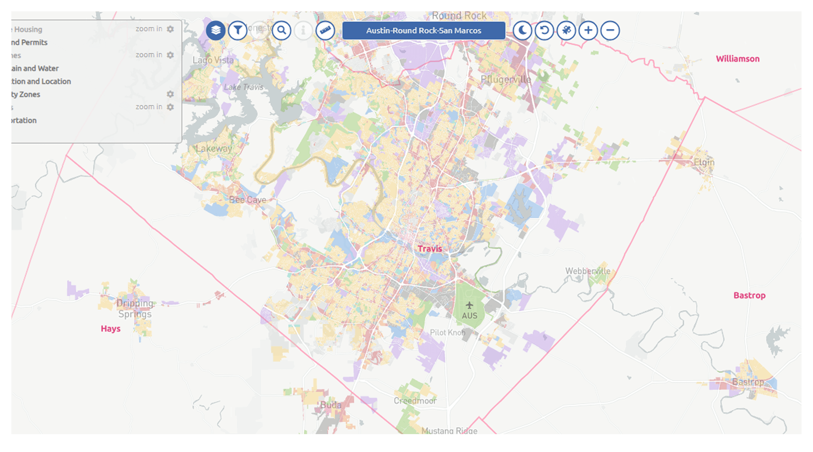
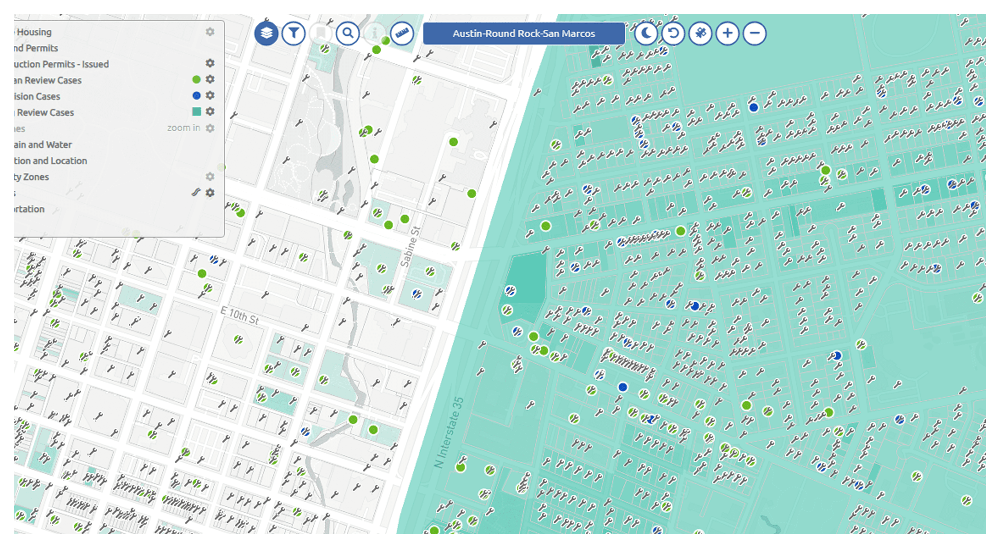
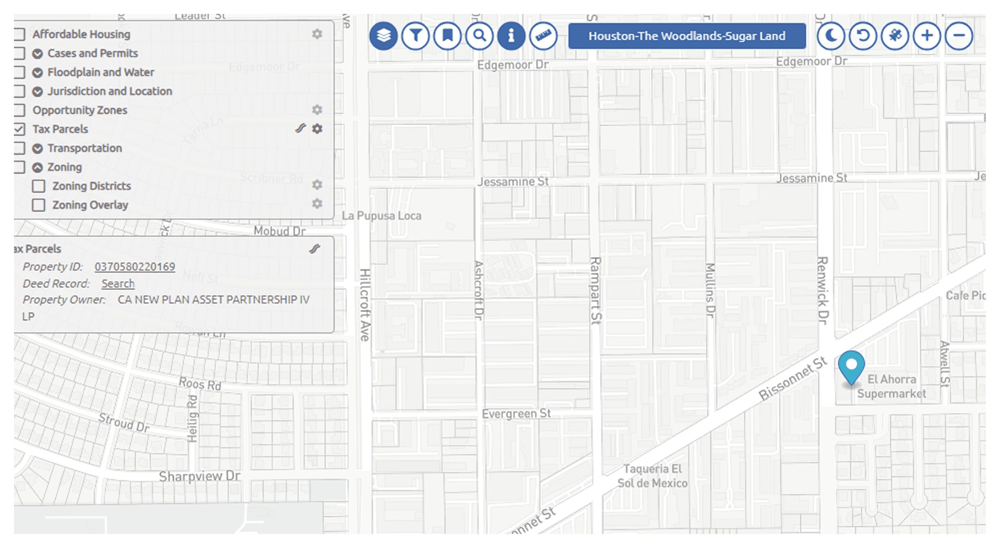

Urban intelligence: scaling real-time geospatial data
How ByteNana automated the ingestion and visualization of critical urban data for the Houston and Austin metropolitan areas.
01 — The challenge
Beyond static mapping
The client's existing WebGIS was stagnant, relying on manual data updates that couldn't keep pace with the rapid development in Houston and Austin. To provide a true "source of truth," they needed a way to automatically monitor, scrape, and normalize zoning, parcel, and permit data from hundreds of disparate municipal sources into a single, high-performance platform.


02 — The solution
An engine for continuous intelligence
We engineered a robust data pipeline that transforms municipal fragmentation into a competitive advantage. By building custom scrapers in Python and Node.js, we automated the collection of parcels and construction permits. This data is fed into a PostGIS spatial database and rendered via Mapbox GL, giving the client an always-current view of the urban landscape.
The collectors
Python & Node.js — high-resilience scrapers that monitor and extract data from city permit and zoning portals.
The spatial vault
PostGIS — a geospatial database optimized for complex polygon geometries and rapid spatial querying.
The interface
Ember.js & Mapbox GL — a professional-grade GIS interface rendering millions of data points with zero lag.
03 — Inside the platform
The urban data ecosystem
From municipal portals to high-fidelity visualization — an always-current view of parcels, permits, and zoning across entire metro areas.



04 — Key features
Built for high-stakes urban analysis
Automated MSA tracking
Real-time updates for zoning and parcels across the entire Houston and Austin metropolitan areas.
Permit monitoring
Instant visibility into new construction permits, providing an early look at market trends.
Prototyping infrastructure
A dedicated AWS-hosted environment and testing domain for rapid data-source validation.
05 — The result
Multi-source web scraping & spatial analysis
From a stagnant, manually-updated map to an automated intelligence engine — a single source of truth that keeps pace with two of the fastest-growing metros in the US.
06 — Technologies used
The geospatial stack
Python / Node.js
For scalable and resilient web-scraping logic.
PostGIS
For industry-standard geospatial data integrity.
Mapbox GL
For high-performance, GPU-accelerated map rendering.
AWS
For a stable, cloud-based testing and production environment.
We turn municipal fragmentation into a competitive advantage.